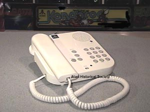
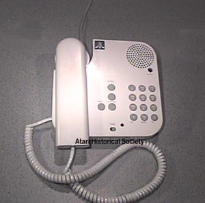
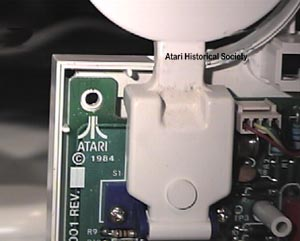

The AtariTel division had many wonderful creations in mind
and the Full Duplex Speakerphone was just
one of them.
Codenamed "Eagle", the AtariTel division
called "Falcon" had
all of its projects nicknamed after birds.

The phone is truly a beautiful work of art. To prove this point
even further,
the phone is also on display in the Museum
of Modern Art.
Designed by Porsche Design in conjunction
with Atari'sown in-house
industrial design staff, the AtariTel
phones were stunning in both look and features.

The phone is capable of full duplex speakerphone conversations.
Today we take such a feature for granted,
however back in 1984 this
was a feature most telephone company's
only had available in expensive high-end business phones.
Other features included:
Variable Speakerphone volume
Flash button for call-waiting
Ringer on/off
Ringer volume
Speakerphone mute
On-Receiver hang-up
On-Receiver Mute
Memory Auto-Dial.